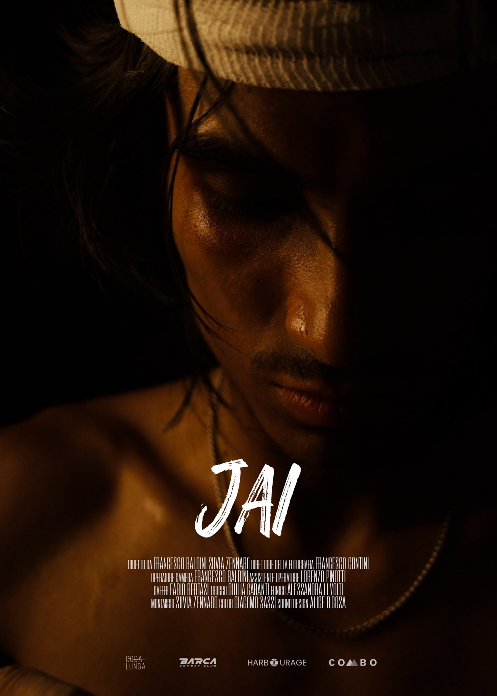

Jai
Excerpt from the film.
Synopsis
Jai follows two friends, Juan and Daniele, in the final days of preparation for the same goal: a Muay Thai match. When the coach chooses one of them for the fight, the chosen one keeps the truth hidden, putting their bond to the test.
50H in Barca
The short film was created as part of a competition in which all the production stages of a short film must be completed in just two days. The crew was made up of students from the same academy.
Awards
- Best Cinematography
- Sayonara Distribution Award
Festivals
Award Winner
- Stockholm City Film Festival
- Athens Marathon International Film Festival
- International İstanbul Short Film & The Writer's Journey Festival
- International Sport Film Festival
Finalist
- Amarcort Film Festival
- Istanbul Sports Film Festival
- Golden FEMI Film Festival
Semi-Finalist
- Thessaloniki Free Short Festival
Quarter-Finalist
- Kobani International Film Festival
Honorable Mention
- Urbanite Arts & Film Festival
Official Selection
- Miami Beach Film Festival
- Beausoleil Côte d'Azur International FICTS Festival du Cinéma Sportif
- Lisboa Indie Film Festival (LISBIFF)
- Napoli – CortiSonanti International Short Film Festival
- SàFF – Social Action Film Festival, Napoli
- Jacovella da Celano Film Festival (JCFF)
- Almamoura Festival
- Kilifi Creek Festival
- Eichsfelder Filmfestival
- Cortintelvi
- Filmmaker Sessions Volume 12
- Filmmaker Sessions Volume 11
Cast
- Juan Carlos Burbello
- Daniele Pellicciari
Main Credits
- DirectorsFrancesco Baldini, Silvia Zennaro
- Director of PhotographyFrancesco Contini
- Camera OperatorFrancesco Baldini
- Assistant CameraLorenzo Pinotti
- GafferFabio Bertasi
- Make-upGiulia Caranti
- SoundAlessandra Li Volti
- EditorSilvia Zennaro
- ColorGiacomo Sassi
- Sound Design & MixAlice Rigosa